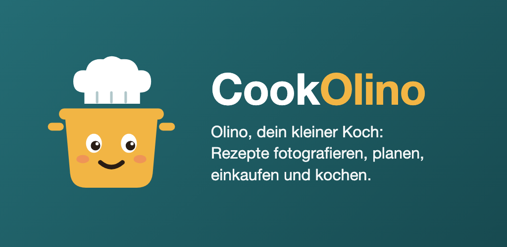

Android-App für die eigene Rezeptsammlung. Rezeptfotos, Webseiten oder eigene Eingaben werden mit Claude (Anthropic) zu sauberen Rezepten aufbereitet. Die Rezepte liegen auf dem Handy und werden auf Wunsch im eigenen Google Drive (Ordner «Cookolino») oder in einem selbst gewählten Ordner gesichert. Zutaten lassen sich in die eigene Bring!-Einkaufsliste übertragen, Rezepte als Datei an andere senden.
Eingelesene Rezepte und Bilder sind für den privaten Gebrauch bestimmt; die Rechte bleiben bei den Urheberinnen und Urhebern.
CookOlino wird derzeit nur in einem geschlossenen Test über Google Play verteilt.